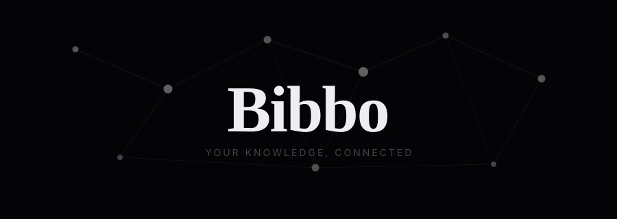

Native desktop · Knowledge graph · Local first
Bibbo maps the way your brain actually works.
Write a node. Link it with [[Title]]. Watch your understanding take shape.
Private beta is limited. No spam, ever.
You're on the list — we'll reach out when you're up.
Folders needed
Global graph
Connections possible
Your data, on your machine
Click any edge and see exactly why two nodes are connected — which ideas reference them together, how recently, how strongly. Not just that they're linked. Why.
No folders. No vaults. No hierarchy. One graph. Structure emerges from connections, not from where you decide to file things.
Nodes repel, spring toward their connections, settle into organic arrangements. Drag one and the whole network shifts. It feels like thinking, not filing.
Recently edited nodes glow. Old nodes fade. The graph is a live picture of what's active in your mind right now, not an equal-weight archive.
Node size grows with incoming references. Concepts your thinking returns to become visually prominent automatically — derived from your own mind, not an algorithm.
No Electron. No cloud. No account. A native app with bundled runtime. Opens instantly. Your data stays in a local file on your machine. Always.
Obsidian
Graph is decorative — you open it to admire it
Still nudges you toward folders and structure
Links are boolean — connected or not connected
Static layout, nodes don't respond to each other
Electron — ships a full browser engine
Platform with plugins, themes, config decisions
Bibbo
You write into the graph. Navigate through it. It is the app.
No folders. One graph. Structure emerges from connections.
Living Connections show you why two nodes are related.
Physics simulation — drag a node and the network responds.
Native binary, bundled runtime, opens instantly.
One focused experience. No configuration. You open it and think.
Collins & Loftus (1975) showed memory works through spreading activation — you access ideas by traversing related concepts, not by navigating folders. Bibbo mirrors this.
The act of linking two concepts forces you to articulate why they're related. That questioning act is itself the learning act. A link isn't the insight — the why is.
The brain naturally weights recently and frequently accessed memories as more salient. Bibbo's temporal decay and node weight mirror these cognitive biases visually.
Private beta is limited. We're building this carefully, one feature at a time.
No spam. You'll hear from us when we're ready.
You're on the list — we'll reach out when you're up.